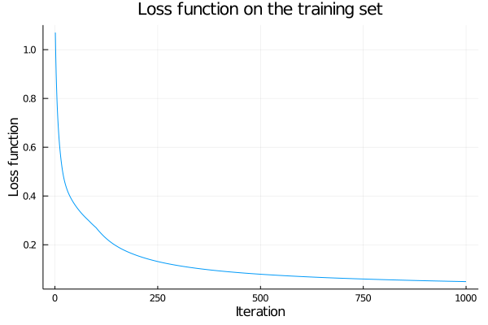

Neural networks
During this lecture, we will train a better classifier for the iris dataset. From the previous lecture, it will differ in several points:
- It will use a neural network instead of the linear classifier.
- It will use all features and not only two.
- It will use all classes and not only two.
Prepare data
We start with loading the iris dataset in the same way as in the last lecture.
using BSON: @load
file_name = joinpath("data", "iris.bson")
@load file_name X y y_nameSince we will use random functions, it is a good idea to fix the seed. When the code is run multiple times, the results will always be the same. Since Julia uses one global seed (unlike Python, which uses different seeds in each package), we all should see the same results. However, if you obtain slightly different results, it may have happened due to a different Julia version or operating system.
using Random
Random.seed!(666)The first exercise splits the dataset into the training and testing set.
Write the split function, which splits the dataset and the labels into training and testing set. Its input should be the dataset X and the labels y. It should have four outputs. Include 80% of data in the training set and 20% of data in the testing set.
Solution:
Since the input may have different forms, we assume that y is a vector and the samples of X and y are across the first dimension. If this is not satisfied, the @assert statement returns an error. This is not necessary to include but it makes the code much more error-prone.
To split the dataset, we first determine the number of samples n_train in the training set. We need to round it and convert it to integer. For the split, we create a random permumation of indices and then select the first n_train indices as the indices of the training set and the remaining as the indices of the testing set.
function split(X::AbstractMatrix, y::AbstractVector; ratio_train=0.8)
@assert size(X,1) == size(y,1)
n = size(X,1)
n_train = round(Int, ratio_train*n)
i_rand = randperm(n)
i_train = i_rand[1:n_train]
i_test = i_rand[n_train+1:end]
return X[i_train,:], y[i_train], X[i_test,:], y[i_test]
endThen we split the dataset by calling the split function
X_train, y_train, X_test, y_test = split(X, y)The next exercises normalizes the data. In the previous lecture, we have already normalized the training set. We compute the normalizing constants (mean and standard deviation) for each feature and then apply them to the data. Since the normalization needs to be done before training, and since the testing set is not available during training, the normalizing constants can be computed only from the testing set. This also means that the features on the training set have zero mean and unit variance but features on the testing set may have different mean and variance.
Write the normalize functions as described above. It should have two inputs and two outputs.
Normalize the data and print the first feature of the first sample in the testing set.
Solution:
Since the features are in columns, we compute the mean and the standard deviation of each column. Since [??? for ??? in ???] creates a column vector, and since we want to apply this vector to all columns, we need to transpose it to a row vector. Otherwise it could not be broadcasted. Then we normalize the columns. Due to the reason mentioned above, we need to use the same normalizing constant for the training and testing sets.
using Statistics
function normalize(X_train, X_test)
col_means = [mean(X_col) for X_col in eachcol(X_train)]'
col_std = [std(X_col) for X_col in eachcol(X_train)]'
return (X_train .- col_means) ./ col_std, (X_test .- col_means) ./ col_std
endNow we run the normalize function.
X_train, X_test = normalize(X_train, X_test)The correct answer is
-0.9838
The standard representation of data in linear and logistic regression is that each row (first dimension) is one sample. However, neural networks work with more-dimensional data (each image is represented by three dimensions). The convention changed and the samples are represented in the last dimension.
The next exercise modifies the data into a standard form for machine learning.
Modify the data so that the first dimension of X are features and the second one the samples.
Write onehot function which converts y into the one-hot representation. Write onecold function which converts the one-hot representation into the one-cold (original) representation. Both these functions need to have two arguments, the second one will be classes which will equal to unique(y).
Write a one-line check that both work correctly.
Finally, convert y into its one-hot representation.
Solution:
We need to transpose X by X'. Since this creates an Adjoint type (check typeof(X')), we convert it to a standard matrix by calling Matrix(X').
X_train = Matrix(X_train')
X_test = Matrix(X_test')The onehot function first creates an array y_onehot, where the first dimension is the number of classes. Since all but one entries of each column will be zeros, we initialize it by zeros. Then we run a for loop to fill one into each column. We perform the for loop over all classes but it is also possible to perform it over all columns.
function onehot(y, classes)
y_onehot = zeros(length(classes), length(y))
for i in 1:length(classes)
y_onehot[i,y.==classes[i]] .= 1
end
return y_onehot
endThe onecold function finds the index of its maximum value via the findmax function. This is repeated for every column y_col.
onecold(y, classes) = [classes[findmax(y_col)[2]] for y_col in eachcol(y)]Functions onehot and onecold should be inverse to each other. That means that if we call them in succession, we obtain the original input. We could manually check
classes = unique(y)
isequal(onecold(onehot(y, classes), classes), y)but it is better to perform this check automatically by including the error message
!isequal(onecold(onehot(y, classes), classes), y) && error("Function onehot or onecold is wrong.")Now, the modification of the labels is straigforward. As in the case of the matrix, we need to modify the split data.
y_train = onehot(y_train, classes)
y_test = onehot(y_test, classes)Preparing the data is spread over many lines. It is better to combine them into one function
function prepare_data(X, y; do_normal=true, kwargs...)
X_train, y_train, X_test, y_test = split(X, y; kwargs...)
if do_normal
X_train, X_test = normalize(X_train, X_test)
end
X_train = Matrix(X_train')
X_test = Matrix(X_test')
classes = unique(y)
y_train = onehot(y_train, classes)
y_test = onehot(y_test, classes)
return X_train, y_train, X_test, y_test, classes
endThen the whole code to load and preprocess the data can be summarized in just three lines.
file_name = joinpath("data", "iris.bson")
@load file_name X y y_name
X_train, y_train, X_test, y_test, classes = prepare_data(X, y)Writing function prepare_data as above has other advantages, we will get back to them in the exercises.
Create the network
We will now construct a simple neural network.
Construct the following network:
- The first layer is a dense layer with the ReLU activation function.
- The second layer is a dense layer with the identity activation function.
- The third layer is the softmax.
Write is as m(x, ???), where x is the input and ??? stands for all weights (parameters to optimize).
Solution:
The dense layer is a linear function z1 = W1*x .+ b1 followed by an activation function. If we assume that x is a vector, then + would work the same as .+ because both W1*x and b are of the same dimension. However, if we want x to be a matrix (each column corresponds to one sample), then we need to write .+ because W1*x is a matrix and the vector b needs to be broadcasted to be of the same size. The activation function is the ReLU function which needs to be applied componentwise. The second layer is the same but this time, we need to finish it with the softmax function. If x is a matrix, then z2 is a matrix, we specify that we want to normalize along the first dimension because the first dimension are classes and the second samples. If we assume only vector inputs, then specifying the dimension is not necessary.
function m(x, W1, b1, W2, b2)
z1 = W1*x .+ b1
a1 = max.(z1, 0)
z2 = W2*a1 .+ b2
a2 = exp.(z2) ./ sum(exp.(z2), dims=1)
endBefore we can use one of the numerical methods from the previous lectures to train the neural network, we need to initialize the weights.
Initialize all the weights randomly following the standard normal distribution. The first layer should have 5 hidden (output) neurons. You need to specify the number of neurons for the other layers correctly.
Evaluate the model m for the first datum from the training set.
Solution:
We write a simple initialize function which takes the number of neurons in each layer as inputs, and randomly generates the matrices.
function initialize(n1, n2, n3)
W1 = randn(n2,n1)
b1 = randn(n2)
W2 = randn(n3,n2)
b2 = randn(n3)
return W1, b1, W2, b2
endTo initialize, we need to provide n1, n2 and n3. The first one is the number of features, the second one is specified to be 5 and the last one must equal to the number of classes (the length of the labels in the one-hot representation).
W1, b1, W2, b2 = initialize(size(X_train,1), 5, size(y_train,1))To evaluate the model, we call the m function with the first sample in the training set
m(X_train[:,1], W1, b1, W2, b2)The correct answer is
[0.1503, 0.0423, 0.8074]
Due to the softmax layer, they sum to one and form a probability distribution describing the probability of each classes.
Train the network
To train the network, we need to compute the gradients. It is rather complicated, it can be written as follows. When going through the code, it becomes clear that it is just a different form of the chain rule derived in the theoretical part.
function grad(x::AbstractVector, y, W1, b1, W2, b2; ϵ=1e-10)
z1 = W1*x .+ b1
a1 = max.(z1, 0)
z2 = W2*a1 .+ b2
a2 = exp.(z2) ./ sum(exp.(z2))
l = -sum(y .* log.(a2 .+ ϵ))
e_z2 = exp.(z2)
l_part = (- e_z2 * e_z2' + Diagonal(e_z2 .* sum(e_z2))) / sum(e_z2)^2
l_a2 = - y ./ (a2 .+ ϵ)
l_z2 = l_part * l_a2
l_a1 = W2' * l_z2
l_z1 = l_a1 .* (a1 .> 0)
l_x = W1' * l_z1
l_W2 = l_z2 * a1'
l_b2 = l_z2
l_W1 = l_z1 * x'
l_b1 = l_z1
return l, l_W1, l_b1, l_W2, l_b2
endThe function returns the function value l and derivatives with respect to all four variables.
Well, for a network with two layers and a loss, you can compute the function value and its derivative in only 16 lines of code. And it could be even shorter :)
The previous function grad can compute the gradient for only one sample. Since the objective in training neural network is a mean over all samples, this mean needs to be included externally. This is NOT the correct way of writing function. However, we decided to present it in the current way to keep the presentation (relatively) simple.
Any time when a simplication like this is included in the code, a check such as x::AbstractVector or an @assert statement should be included to prevent unexpected errors.
Having the gradient at hand, we can finally train the network.
Train the network with a gradient descent with stepsize $\alpha=0.1$ for $1000$ iterations. Save the objective value at each iteration and plot the results.
Solution:
Due to the simplicity of the grad function, grad(X_train[:,k], y_train[:,k], W1, b1, W2, b2) returns a tuple of five objects. We can use the standard trick to create an array of such tuples by going through all columns [grad(X_train[:,k], y_train[:,k], W1, b1, W2, b2) for k in 1:size(X_train,2)]. To obtain a mean from this array, we write the mean_tuple function. To make sure that everything is correct, we specify the input type d::AbstractArray{<:Tuple}. If d is the input data, then d[k] is an element of the array (thefore a tuple) while d[i][k] is an element of the tuple. Since we want to compute the mean over the array, the inner loop needs to be with respect to k while the outer one with respect to i.
using LinearAlgebra
using Statistics
mean_tuple(d::AbstractArray{<:Tuple}) = [mean([d[k][i] for k in 1:length(d)]) for i in 1:length(d[1])]Now the process is simple. We compute the gradient grad_all, then its mean grad_mean via the already written function mean_tuple. The first value of the tuple grad_mean is the objective, the remaining are the gradients. Thus, we save the first value to an array and use the remaining one to update the weights.
α = 1e-1
max_iter = 1000
L = zeros(max_iter)
for iter in 1:max_iter
grad_all = [grad(X_train[:,k], y_train[:,k], W1, b1, W2, b2) for k in 1:size(X_train,2)]
grad_mean = mean_tuple(grad_all)
L[iter] = grad_mean[1]
W1 .-= α*grad_mean[2]
b1 .-= α*grad_mean[3]
W2 .-= α*grad_mean[4]
b2 .-= α*grad_mean[5]
end
Prediction
We have trained our first network. We saw that the loss function keeps decreasing, which is a good sign of a good training procedure. Now we will evaluate the performance.
Write a function which predict the labels for samples. Show the accuracy on both training and testing sets.
Solution:
The predicted probabilities are obtained by using the model m. The prediction (highest predicted probability) is obtained by converting the one-hot into the one-cold representation. Finally, the accuracy computes in how many cases the prediction equals to the label.
predict(X) = m(X, W1, b1, W2, b2)
accuracy(X, y) = mean(onecold(predict(X), classes) .== onecold(y, classes))
println("Train accuracy = $(accuracy(X_train, y_train))")
println("Test accuracy = $(accuracy(X_test, y_test))")Train accuracy = 0.9916666666666667 Test accuracy = 0.9333333333333333
The correct answer is
Train accuracy = 0.9917 Test accuracy = 0.9333
We see that the testing accuracy is smaller than the training one. This is quite a common phenomenon which is named overfitting. The problem is that the algorithm sees only the data from the training set. If it fits this data "too perfectly", it is not able to generalize into unseen samples (the testing set).